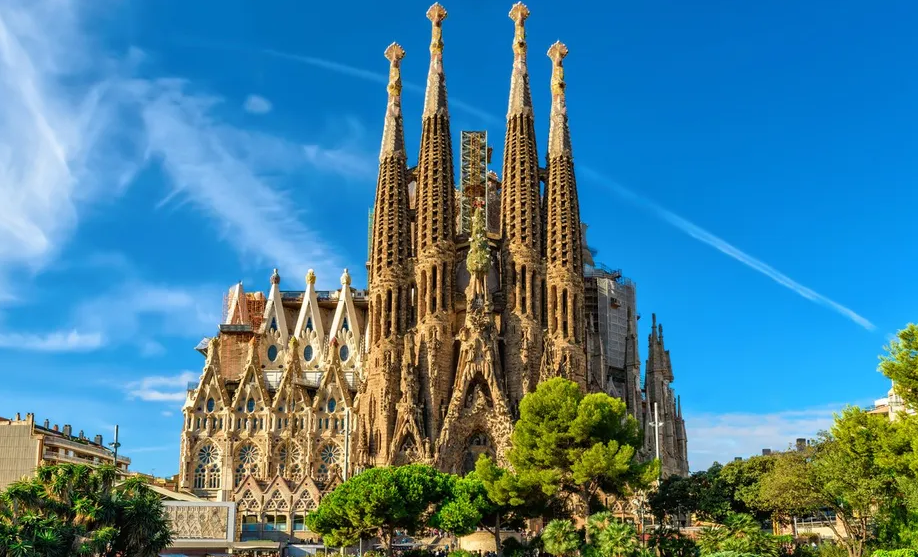
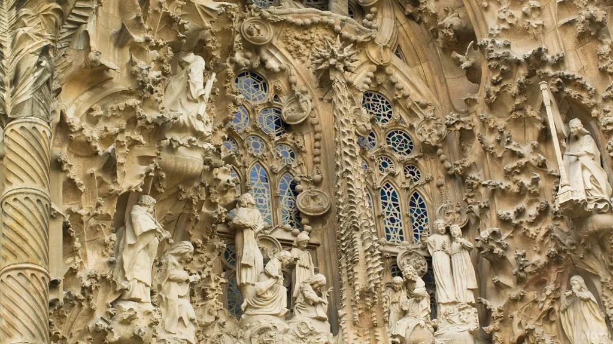

[사그라다 파밀리아] 살아 있는 건축의 전설

스페인 바르셀로나의 하늘 아래, 하나의 건축물이 시간과 신앙, 예술을 초월해 우뚝 솟아 있다. 바로 **사그라다 파밀리아(Sagrada Família)**. 이 성당은 단순한 건물이 아니다. 140년 넘게 공사가 이어지고 있는 ‘살아 있는 성당’이자, 건축가 안토니 가우디의 혼이 담긴 걸작이다.
가우디는 이 건축물을 단순한 예배 공간이 아니라, 신과 자연, 인간을 연결하는 상징적 구조물로 설계했다. 탑은 하늘로 뻗고, 곡선은 생명을 닮았으며, 빛은 색유리를 통해 시간에 따라 공간을 물들인다. 그 안에서 느끼는 감동은 종교를 초월해 순수한 경외로 다가온다.
사그라다 파밀리아는 1882년 착공되었고, 가우디는 생애 마지막 15년을 이 건축에만 몰두했다. 하지만 그는 1926년 갑작스러운 사고로 세상을 떠났고, 전체 설계는 남은 제자들과 후세 건축가들의 손에 의해 지금도 계속되고 있다. 가우디는 "나의 고객(신)은 서두르지 않는다"고 말했으며, 그 말처럼 성당은 세기를 넘어 지금도 공사 중이다.
성당은 **세 개의 주요 입면(Facade)**으로 구성된다. ‘탄생의 입면’, ‘수난의 입면’, 그리고 아직 완성되지 않은 ‘영광의 입면’이다. 각각의 입면은 성경의 이야기를 시각적으로 풀어낸 조각과 상징으로 가득하다. 탄생의 입면은 화려하고 생명력 넘치며, 수난의 입면은 직선적이고 절제되어 있으며, 인간의 고통과 희생을 상징한다.
내부에 들어서면 가장 먼저 눈에 들어오는 것은 **천장과 기둥의 숲**이다. 자연을 사랑했던 가우디는 나무를 본떠 기둥을 설계했고, 그 기둥들이 하늘로 갈라지며 거대한 숲의 천장을 만들어낸다. 스테인드글라스를 통해 들어오는 햇빛은 시시각각 색을 바꾸며 신비한 분위기를 자아낸다. 붉고 푸른 빛이 벽과 바닥을 물들이는 모습은 마치 하늘과 땅이 만나는 순간처럼 느껴진다.

전망대에 올라가면 바르셀로나 시내와 지중해가 한눈에 내려다보인다. 여유로운 도시의 리듬과 가우디의 작품들이 조화를 이루는 이 풍경은, 사그라다 파밀리아를 단지 종교적인 장소로만 보지 않게 만든다. 이곳은 도시의 중심이자, 세계인의 영감이 모이는 장소다.
관람을 계획하고 있다면, 온라인 사전 예약은 필수다. 하루 입장 인원이 제한되어 있어 현장 구매는 대기 시간이 길 수 있다. 오디오 가이드를 통해 각 부분의 의미와 가우디의 의도를 함께 듣는다면 더욱 깊이 있게 감상할 수 있다. 성당 외부는 낮에도 아름답지만, 해질 무렵 노을이 건축물에 드리우는 장면은 잊지 못할 장관을 선사한다.
사그라다 파밀리아는 완성되지 않았기에 더욱 특별하다. 이곳은 과거의 천재가 남긴 비전이 현재의 기술과 예술로 구현되고 있는 공간이다. 매년 조금씩, 그러나 확실하게 완성을 향해 나아가는 이 성당은 우리에게 끊임없는 창조와 헌신, 그리고 기다림의 가치를 일깨워준다.
바르셀로나에 간다면, 이 전설 같은 건축물 앞에 서보자. 눈으로 보고, 빛으로 느끼고, 마음으로 바라본 그 순간이 당신의 기억 속에 영원히 남을 것이다.